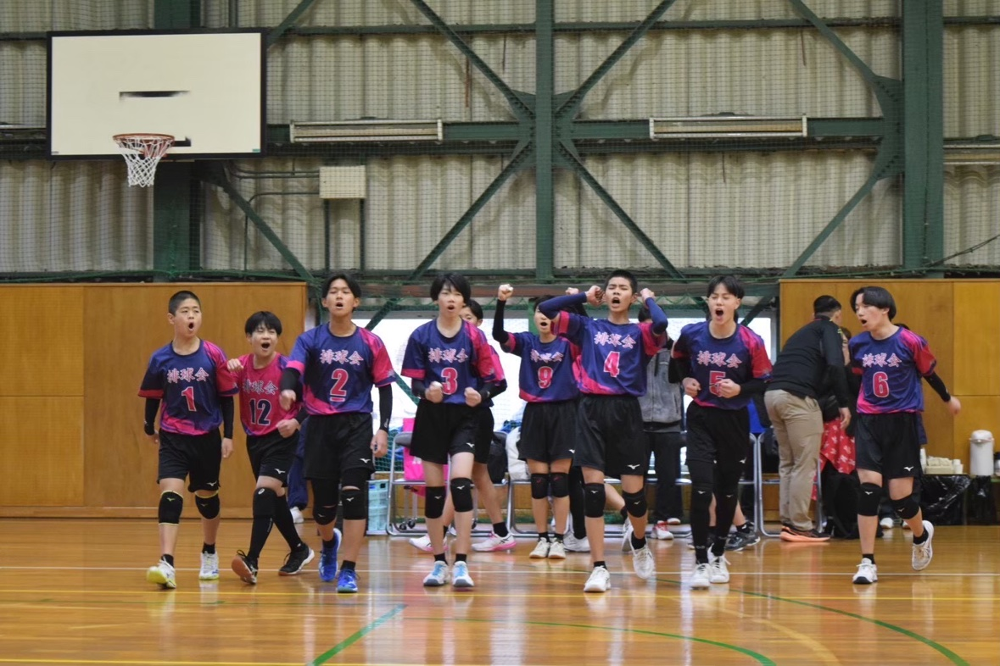
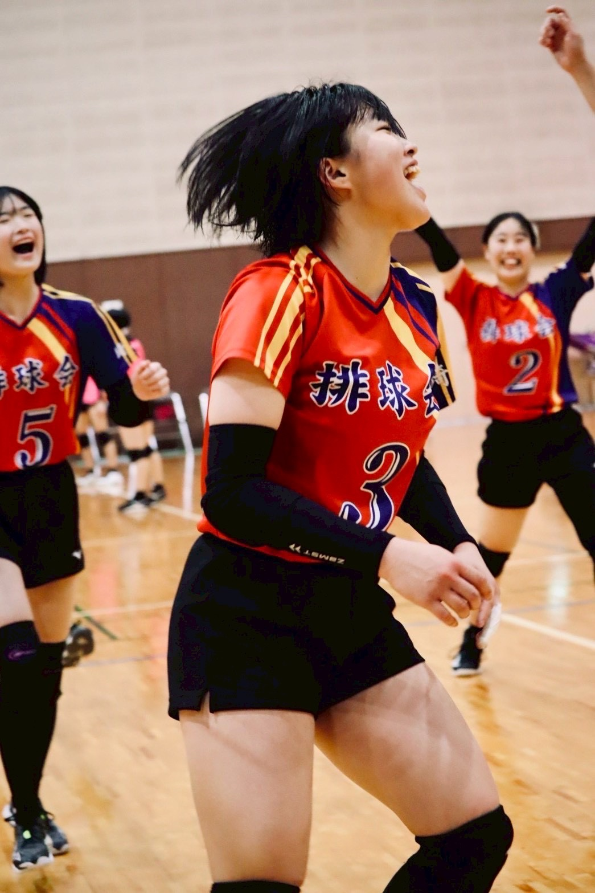

TODA, SAITAMA / U15 VOLLEYBALL CLUB
一球に、全力を。
埼玉県戸田市を拠点に活動する中学生のバレーボールクラブ「排球会」。男子・女子の2チームで、一球一球を大切にしています。
TODA, SAITAMA / U15 VOLLEYBALL CLUB
埼玉県戸田市を拠点に活動する中学生のバレーボールクラブ「排球会」。男子・女子の2チームで、一球一球を大切にしています。
OUR SLOGAN
仲間を信じてボールをつなぐ。コートの中で自分で考え、声をかけ合える選手を育てます。
JOIN US
体験練習はいつでも受け付けています。お申し込みはInstagramのDMから、排球会事務局までお気軽にどうぞ。
体験練習を申し込むABOUT排球会について
排球会は、埼玉県戸田市を拠点に活動するU15（中学生）バレーボールクラブです。男子チームと女子チームがあり、それぞれ平日の練習に加えて、隔週の土日には試合・大会に参加しています。
バレーボールの普及と育成を掲げ、確かな技術力の向上はもちろん、選手一人ひとりの主体性と自立を大切にしています。
横断幕に掲げられた「一球に全力」「翔べ、繋げ」の言葉のとおり、一球一球を大切にし、仲間とボールをつなぐバレーボールを目指しています。

VALUES大切にしていること
01
バレーボールの楽しさを地域に広げ、次世代の選手を育てます。競技の入り口として、そして本気で取り組む場として、戸田市から輪を広げていきます。
02
サーブ、レシーブ、トス、スパイク。一つひとつのプレーを丁寧に積み重ね、試合で通用する確かな技術を身につけることを目指します。
03
言われたことをこなすだけではなく、自分で考え、声をかけ合い、チームを動かす。コートの中で自ら判断できる選手を育てます。
04
準備や片付け、体調管理まで、自分のことは自分でやる。バレーボールを通じて、ひとりの人としての自立も育てていきます。

STAFFスタッフ紹介
代表・スタッフ・トレーナー・アドバイザーが、選手一人ひとりの成長を支えています。
代表
排球会の代表として、 チーム全体の運営を担っています。
スタッフ
スタッフとして、 日々の活動を支えています。
スタッフ
スタッフとして、 日々の活動を支えています。
トレーナー
トレーナーとして、選手の コンディショニングと身体づくりを担当しています。
アドバイザースタッフ
2023〜2024年には 女子チームの監督を務めました。
アドバイザースタッフ
2025年には 男子チームの監督を務めました。
SCHEDULE活動案内
男子チーム・女子チームそれぞれに活動日があります。平日の活動時間は19:00〜21:00、活動場所は戸田市近辺の小・中学校です。

BOYS
月曜・水曜＋ 隔週で土日
平日の活動時間 19:00〜21:00
| 月 | 火 | 水 | 木 | 金 | 土 | 日 |
|---|---|---|---|---|---|---|
| ● | ー | ● | ー | ー | 隔週 | 隔週 |
平日は月曜・水曜の19:00〜21:00に活動。土日は隔週で試合・大会に参加します。

GIRLS
火曜・土曜＋ 隔週で土日
平日の活動時間 19:00〜21:00（火曜）
| 月 | 火 | 水 | 木 | 金 | 土 | 日 |
|---|---|---|---|---|---|---|
| ー | ● | ー | ー | ー | ● | 隔週 |
火曜（19:00〜21:00）と土曜に活動。日曜は隔週で試合・大会に参加します。
中学生が対象です。小学5・6年生は応相談となりますので、まずはお気軽にお問い合わせください。
平日は19:00〜21:00に活動しています。土日は隔週で試合・大会に参加しています（時間は試合ごとに異なります）。
活動場所は戸田市近辺の小・中学校です。詳細はお問い合わせの際にご案内します。
費用の詳細はお問い合わせください。
GALLERYギャラリー
練習や試合の様子です。写真をクリックすると大きく表示されます。
動画・写真は排球会のInstagram（@haikyu_club819）でも公開しています。
JOIN US体験練習・入会の流れ
STEP 1
InstagramのDMから、排球会事務局へご連絡ください。体験練習はいつでも受け付けています。学年と、男子・女子の別をお知らせいただけるとスムーズです。
Instagramで問い合わせるSTEP 2
体験練習はいつでも参加できます。実際の練習に参加して、チームの雰囲気や練習の様子を体験してください。日程や持ち物は、お問い合わせの際にご案内します。
STEP 3
体験を経て、入会の手続きをご案内します。活動の詳細や費用については、この際にご説明します。
FAQよくある質問
中学生が対象です。小学5・6年生については応相談となりますので、まずはお気軽にお問い合わせください。
体験練習はいつでも参加できます。InstagramのDMから、排球会事務局までご連絡ください。体験の日程や持ち物をご案内します。
男子チームは月曜・水曜、女子チームは火曜・土曜に練習し、隔週の土日には試合・大会に参加しています。詳しくは「活動案内」をご覧ください。
平日の活動時間は19:00〜21:00、活動場所は戸田市近辺の小・中学校です。土日は隔週で試合・大会に参加しています。詳しくはInstagramのDMから排球会事務局へご連絡ください。
費用の詳細はお問い合わせください。体験練習の際にご説明することも可能です。
経験の状況については、体験練習の際にご相談ください。まずは練習の雰囲気を見に来ていただくところからで大丈夫です。
CONTACT ／ 排球会事務局
体験練習はいつでも受付中です。体験・見学のお申し込み、活動に関するご質問は、排球会事務局までお気軽にご連絡ください。
InstagramのDMで問い合わせる@haikyu_club819（排球会 公式Instagram）